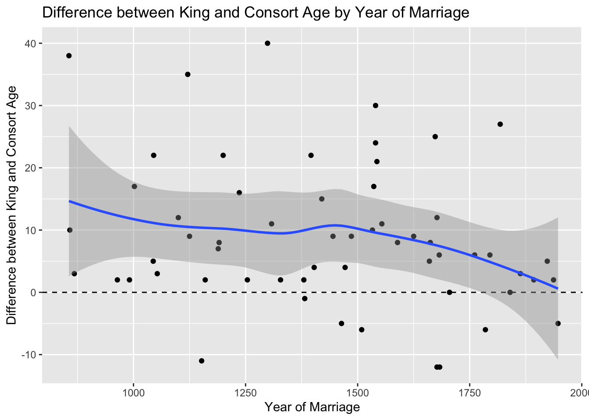
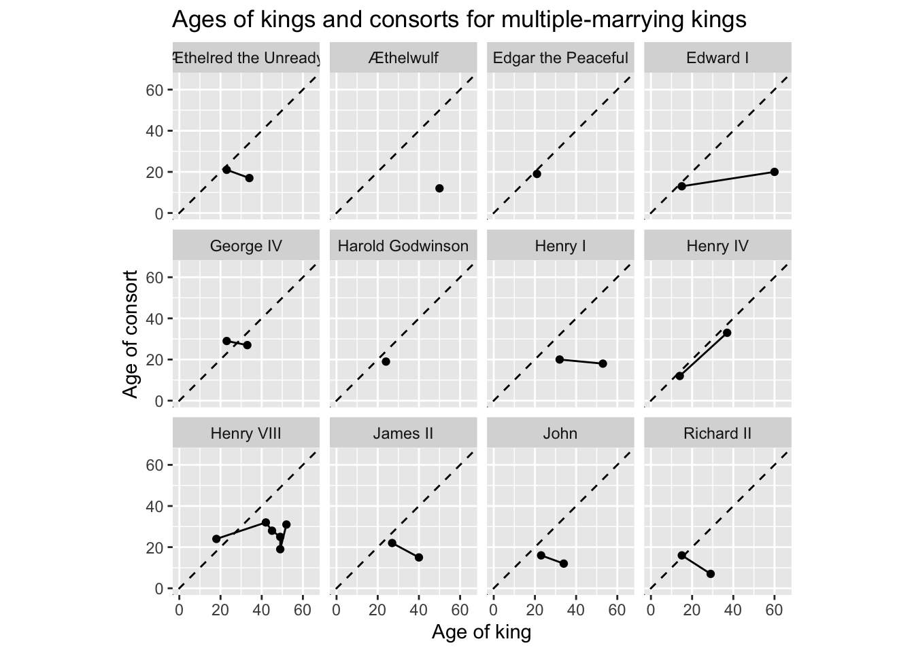

Rows: 83 Columns: 5
── Column specification ────────────────────────────────────────────────────────
Delimiter: ","
chr (5): king_name, king_age, consort_name, consort_age, year_of_marriage
ℹ Use `spec()` to retrieve the full column specification for this data.
ℹ Specify the column types or set `show_col_types = FALSE` to quiet this message.
Data tidying - a lot of missing age information for older records, especially for the consorts:
# A tibble: 8 × 5
king_name consort_name king_age consort_age year_of_marriage
<chr> <chr> <dbl> <dbl> <dbl>
1 Richard II Anne of Bohemia 15 16 1382
2 Mary II William III 15 27 1677
3 Henry VIII Catherine of Aragon 18 24 1509
4 Anne George of Denmark 18 30 1683
5 Henry II Eleanor of Aquitaine 19 30 1152
6 Elizabeth II Philip of Greece and Denma… 21 26 1947
7 Edward IV Elizabeth Woodville 22 27 1464
8 George IV Maria Anne Fitzherbert 23 29 1785
Female ‘kings’ are over-represented but not the majority
Now difference between king and consort age by year of marriage
Code
mar_tidy |>mutate(age_diff = king_age - consort_age) |>ggplot(aes(x = year_of_marriage, y = age_diff)) +geom_point() +labs(title ="Difference between King and Consort Age by Year of Marriage",x ="Year of Marriage",y ="Difference between King and Consort Age" ) +geom_hline(yintercept =0, linetype ="dashed") +geom_smooth()
`geom_smooth()` using method = 'loess' and formula = 'y ~ x'
Warning: Removed 25 rows containing non-finite outside the scale range
(`stat_smooth()`).
Warning: Removed 25 rows containing missing values or values outside the scale range
(`geom_point()`).

The age gap between kings and consorts appears to have been falling from around 1500. (Note: neither of King Charles’ consorts are in the dataset as he was not a king at the time of either marriage)
Was there any obvious tendency for English Kings to have multiple wives, and - like Leo DeCaprio - keep partnering with young women as they age?
# A tibble: 25 × 6
# Groups: king_name [11]
king_name king_age consort_name consort_age year_of_marriage king_count
<chr> <dbl> <chr> <dbl> <dbl> <int>
1 Æthelred the U… 34 Emma of Nor… 17 1002 2
2 Cnut 18 Aelfgifu of… NA 1013 2
3 Cnut 22 Emma of Nor… NA 1017 2
4 Harold Godwins… 24 Edith Swann… 19 1044 2
5 Harold Godwins… 42 Ealdgyth NA 1064 2
6 Henry I 32 Matilda of … 20 1100 2
7 Henry I 53 Adeliza of … 18 1121 2
8 John 23 Isabel of G… 16 1189 2
9 John 34 Isabella of… 12 1200 2
10 Edward I 15 Eleanor of … 13 1254 2
# ℹ 15 more rows
For many marriages the ages of the consorts weren’t known (the records are from hundreds of years ago, so maybe that’s to be expected).
Code
mar_tidy |>group_by(king_name) |>mutate(king_count =n()) |>filter(king_count >1) |>filter(!is.na(consort_age)) |>ggplot(aes(x = king_age, y = consort_age)) +geom_line() +geom_point() +coord_equal() +coord_equal(xlim =c(0, 65), ylim =c(0, 65)) +geom_abline(intercept =0, slope =1, linetype ="dashed") +facet_wrap(~king_name) +labs(x ="Age of king",y ="Age of consort",title ="Ages of kings and consorts for multiple-marrying kings" )
Coordinate system already present.
ℹ Adding new coordinate system, which will replace the existing one.
`geom_line()`: Each group consists of only one observation.
ℹ Do you need to adjust the group aesthetic?
`geom_line()`: Each group consists of only one observation.
ℹ Do you need to adjust the group aesthetic?
`geom_line()`: Each group consists of only one observation.
ℹ Do you need to adjust the group aesthetic?

Henry VIII is clearly an outlier in terms of the number of marriages he had. But there’s no clear tendency for English kings to marry with Hollywood tendencies.
Even where some kings have been married multiple times, the age of the consorts might only have been recorded one or zero times.
For many of the older records honourifics (and in some cases dishonourifics) were applied to the name. These were identified by the king name having the word ‘the’ in them:
Code
mar_tidy |>filter(str_detect(king_name, " the ")) |>pull(king_name) |>unique()
[1] "Alfred the Great" "Edward the Elder" "Edgar the Peaceful"
[4] "Edward the Martyr" "Æthelred the Unready" "Edward the Confessor"
[7] "Henry the Young King"
Better to be ‘unready’ or a ‘martyr’? (probably best to be unready to be a martyr!)